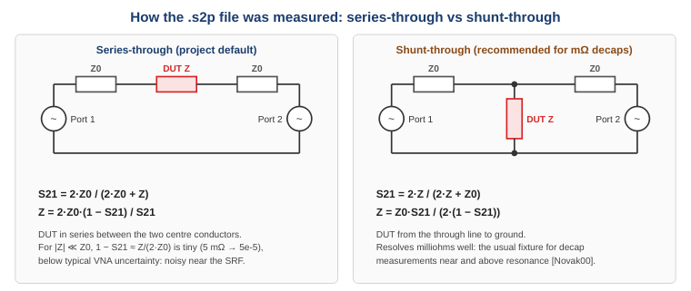

As an alternative to SPICE models, a decap can be described by a measured (or vendor-supplied)
2-port S-parameter file in Touchstone version 1 format (.s2p). The capacitor impedance
Z(f) is extracted from S21 using the fixture type, then interpolated onto the sweep frequencies.
! Synthetic series-through file of a 100 nF 0402 capacitor <- comment ("!" anywhere on a line)
# HZ S RI R 50 <- option line
1000 0.9999 -0.0001 0.0029 0.6283 0.0029 0.6283 0.9999 -0.0001
1024.2 ...
| Item | Rule |
|---|---|
| Comments | ! starts a comment anywhere on a line. |
| Option line | # [unit] [parameter] [format] [R z0], tokens in any order, case-insensitive. Defaults: # GHZ S MA R 50. Only the first option line counts. |
| Frequency unit | HZ, KHZ, MHZ, GHZ. |
| Parameter | Must be S (Y, Z, H, G files give E_S2P_PARAM). |
| Format | MA magnitude / angle in degrees, DB dB (20·log10) / angle in degrees, RI real / imaginary. |
| Data | 9 numbers per frequency: f S11 S21 S12 S22, each as a pair. A record may span several lines. Version 1 order is 11, 21, 12, 22. |
| Frequencies | Strictly increasing, at least 2 points. A frequency that is not larger than the previous one starts a noise-parameter block, which is ignored (W_S2P_NOISE_IGNORED). |
| Version 2 files | Keyword lines such as [Version] 2.0 are not supported (E_S2P_V2). Export the file as version 1. |
The same capacitor gives very different S21 depending on how it was mounted in the test fixture. You must tell the tool which fixture was used: per decap row in the S2P Mode column, or globally with S2P default mode in Vias ▸ Advanced (default: series).

Figure 1 – The two fixture types and the conversion used for each.
| Mode | Fixture | S21 | Impedance used |
|---|---|---|---|
series | Capacitor between the centre conductors of port 1 and port 2 | S21 = 2·Z0 / (2·Z0 + Z) | Z = 2·Z0·(1 − S21) / S21 |
shunt | Capacitor from the through line to ground | S21 = 2·Z / (2·Z + Z0) | Z = Z0·S21 / (2·(1 − S21)) |
Z0 is the reference impedance from the option line (R 50). To reduce measurement noise the
average (S21 + S12)/2 is used.
Which one should I choose?
|
W_S2P_EXTRAP_LOW.W_S2P_EXTRAP_HIGH.Choose files that cover your sweep range (default 100 kHz – 1 GHz) to avoid extrapolation. Note that a measured file includes the fixture's own parasitics; they are not removed.
| Code | Meaning | What to do |
|---|---|---|
E_S2P_PARAM | The option line declares Y, Z, H or G parameters. | Export S-parameters. |
E_S2P_V2 | Touchstone 2.0 keywords found. | Export as Touchstone 1.x. |
E_S2P_FORMAT | The number of values is not a multiple of 9, fewer than 2 frequencies, or the data cannot be read. | Check that it is a 2-port file (.s2p) and not truncated. |
W_S2P_NOISE_IGNORED | A noise-parameter block after the S-parameters was ignored. | Nothing. |
W_S2P_SINGULAR | S21 ≈ 0 (series) or S21 ≈ 1 (shunt) at some frequency; the value was clamped. | Usually the wrong S2P mode – check it. |
W_S2P_EXTRAP_LOW | The sweep starts below the first frequency of the file. | Use a file with lower start frequency or raise f start. |
W_S2P_EXTRAP_HIGH | The sweep ends above the last frequency of the file. | Use a wider file or lower f stop. |